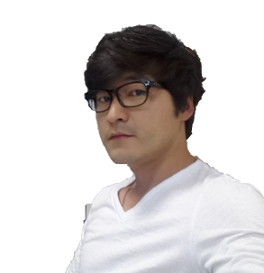

I am a Software Engineer and have been developing System SW for embedded device at Samsung Electronics.
My interests are Parallel Computing, Programming Languages and System SW Frameworks for Neural Network.
Acceleration frameworks for Linear Algebra such as BLAS, LAPACK, LINPACK and etc. are also what I can have fun with.
- Work Experience
-
Samsung Research, Samsung Software Engineer - Seoul, Korea
NNTrainer ProjectDec 2019-Current
NNtrainer is an Open Source Project. The aim of the NNtrainer is to develop
Software Framework to train neural network model on embedded devices which has
relatively limited resources. Rather than training the whole layers, NNtrainer
trains only one or a few layers added after the feature extractor. It is available
at https://github.com/nnstreamer/nntrainer.
I am maintainer and founder of this project.
NNStreamer ProjectJune 2018-Current
NNStreamer is a set of Gstreamer plugins, which allows Gstreamer developers to
adopt neural network models easily. It is an opensource project and downloaded from
https://github.com/nnstreamer/nnstreamer.
I have been a main contributor since the beginning of this project.
Developing Tizen Platform for Autonomous DrivingMay-Jan 2018
Developing Tizen Platform for the Autonomous Driving which includes various soft
ware packages such as ROS(Robot OS System) and Neural Network Frameworks(Caffe,tensorflow, etc.).
Used Tizen Build System including OBS(Open Build Service) and package management system.
Successfully finished auto driving test on top of this platform.
NPU(Neural Processing Unit) Compiler DevelopmentMar-Dec 2017
NPU Compiler generates binary to execute inference on NPU HW. I developed fron
tends(parser, optimizer) mainly, which takes neural network framework model,
parses and generates binary for each neural network layers. It also includes opti
mizatino for better performance such as removing memory transfer overhead, blocking
technique, etc.. Successfully executed googlenet and other neural network model
CheckedC Compiler DevelopmentOct 2016-Feb 2017
CheckedC(
https://github.com/Microsoft/checkedc) is additional C/C++ language specification to make
robust against security attack such as buffer overflow. It was joint
project with Microsoft Research and I was main contributor at Samsung. Most of
work was implementation of language specification using LLVM/CLANG, which was
improved through discussion.
-
Mobile Division, Samsung Software Engineer - Seoul, Korea
On-Device EncryptionOct 2016-Feb 2017
I was involved security team and had developed on-device encryption and decryption
system software. It works across whole process from start and I developed
system SW to manage keys for block devices.
Vulnerability AssessmentMar-Sep 2015
Analyzed Software including Kernel and boot sequence. Trying to detect potential vulnerabilities
of Mobile Device. Wrote PoC code for rooting and demonstrated security
attack. Also applied security patches about known vulnerabilities such as CWE.
-
DMC R&D Center, Samsung Software Engineer - Seoul, Korea
Research of AOT(Ahead of Time) CompilerJul 2014-Feb 2015
Had Developed AOT Compiler Technique to convert android application to Tizen Application.
Also, looked for way to integrate auto parallelization technique for multicore
into ART (Android Runtime) using LLVM/CLANG. It was pure research project to evaluate the possibility.
Auto Parallelization & Improving OpenMPJan 2013-June 2014
I developed auto parallelization technique based on Alias Analysis for Multi-Core
with LLVM for Embedded Device. OpenMP(Open Multi Procssing) framework which
support 4.0 Specification was improved for low power computing with LLVM/CLANG.
Android Application Optimiziation with NEON SIMDAug 2010-May 2011
I optimized android application with NEON SIMD and reseach about GPGPU Computing for embedded device.
Developed high performance Image conversion library.
-
College of Engineering, SNU Software Engineer - Seoul, Korea
Maintainer of Web and Cluster SystemJul 2008-Jul 2010
I was a maintainer in college of engineering during my study. Developed and Maintained the web service
(included developing HA-High Availability cluster system) and HPC (High Performance Computing) cluster
for scientific computation. Tool chain service was included such ad ABAQUS & LS-DYNA. Also I gave
lecture about how-to Build cluster includes diskless.
- Education
-
Seoul National University Seoul, Korea
Doctor of PhilosophyJuly 2010
Major: Aerospace Engineering
Thesis: "High Velocity Contact-Impact Simulation with Parallel Computing"
Adviser: Prof. SeungJo Kim
Master DegreeFeb 2004
Major: Aerospace Engineering
Thesis: "Massive Parallel Computing for Finite Element Method"
Adviser: Prof. SeungJo Kim
-
Research Interests
Developing HPC Cluster System
- 520 CPUs, 1.24 TFlops : Top500 56th in 2003
- It was the first cluster system achieved over 1TFlops in Korea.
- Accelerate Performance using MPI, OpenMP, OpenCL, GPGPU Computing
Research on Parallel Computing Technique for Massive Contact-Impact Problem
- Developed Parallel Lagrangian-Eulerian Hydrocode with MPI
- Numerical Library Acceleration : BLAS, ATLAS, LINPACK, LAPACK, etc.
- Develop High Performance Direct/Iterative Solver
Research on GRID Computing
- Developed Departmental Computing GRID System for Structural Analysis
- Publications
-
Peer-Reviewed journal Papers
- Jijoong Moon, SeungJo Kim, and Minhyung Lee. High velocity impact simulation of
brittle materials with node separation scheme in parallel computing environment.
Computer Modeling in Engineering & Sciences , 59(3):275–300, 2010
- Seung Hoon Paik, Jijoong Moon and SeungJo Kim. Parallel performance of large scale
impact simulation on linux cluster super computer. Computers & Structures
, 84(10-11):732–741, 2006
-
Peer-Reviewed Conference Papers
-
Jijoong Moon, Hyun Suk Lee, Jiho Chu, Donghak Park, Seungbaek Hong, Hyungjun Seo,
Donghyeon Jeong, Sungsik Kong, MyungJoo Ham
A New Frontier of AI: On-device AI Training and Personalization
46th ACM/IEEE International Conference on Software Engineering (ICSE)-SEIP, Lisbon, Portugal, April, 2024
-
Francesco Barbato, Umberto Michieli, Jijoong Moon, Pietro Zanuttigh, Mete Ozay
Cross-Architecture Auxiliary Feature Space Translation for Efficient Few-Shot Personalized Object Detection
The 2024 IEEE/RSJ International Conference on Intelligent Robots and Systems, ADNEC, Abu Dhabi, UAE, October, 2024
-
Kirill Paramonov, Jia-Xing Zhong, Umberto Michieli, Jijoong Moon, Mete Ozay
Swiss DINO: Efficient and Versatile Vision Framework for On-device Personal Object Search
The 2024 IEEE/RSJ International Conference on Intelligent Robots and Systems, ADNEC, Abu Dhabi, UAE, October, 2024
-
Elena Camuffo, Umberto Michieli, Simone Milani, Jijoong Moon, Mete Ozay
Enhanced Model Robustness to Input Corruptions by Per-corruption Adaptation of Normalization Statistics
The 2024 IEEE/RSJ International Conference on Intelligent Robots and Systems, ADNEC, Abu Dhabi, UAE, October, 2024
-
Hafiz Tiomoko Ali, Umberto Michieli,
Jijoong Moon
, Daehyun Kim, Mete Ozay
Deep Neural Network Models Trained with a Fixed Random Classifier Transfer Better Across Domains
2024 IEEE International Conference On Acustics, Speech and Signal Processing, Seoul, Korea, April, 2024
-
Elena Camuffo, Umberto Michieli,
Jijoong Moon, Daehyun Kim, Mete Ozay
FFT-Based Selection and Optimization of Statistics for Robust Recognition of Severely Corrupted Images.
2024 IEEE International Conference On Acustics, Speech and Signal Processing, Seoul, Korea, April, 2024
-
Umberto Michieli,
Jijoong Moon
, Daehyun Kim, Mete Ozay
Object-Conditioned Bag of Instances For Few-shot Personalized Instance Recognition
2024 IEEE International Conference On Acustics, Speech and Signal Processing, Seoul, Korea, April, 2024
-
MyungJoo Ham,
Jijoong Moon
, Geunsik Lim, Jaeyun Jung, Hyoungjoo
Ahn, Wook song, Sangjung Woo, Parichay Kapoor, Dongju Chae, Gichan Jang, Yongjoo Ahn, Jihoon Lee
Nnstreamer: Efficient and Agile Development of On-Device AI System
43rd ACM/IEEE International Conference on Software Engineering (ICSE)-SEIP, Madrid, Spain, May, 2021
-
Geunsik Lim, MyungJoo Ham,
Jijoong Moon, Wook song
LightSys: Lightweight and Efficient CI System for Improving Integration Speed of Software
43rd ACM/IEEE International Conference on Software Engineering (ICSE)-SEIP, Madrid, Spain, May, 2021
-
Jijoong Moon
, MyungJoo Ham, Geunsik Lim,
Performace Analysis of Neural Network Pipelining for Multimodal On-Device AI Application.
Korea Software Conference, PyungChang, Korea, Dec. 2019
-
Geunsik Lim, MyungJoo Ham,
Jijoong Moon
, Wook song, Sangjung Woo, and Sewon
Oh. Taos-ci: Lightweight & modular continuous integraion system for edge computing.
In
IEEE International Conference on Consumer Electronics
, 2019
-
Jijoong Moon
, SeungJo Kim, Minhyung Lee, and Yohan Yoo. Optimization for parallel
impact analysis of brittle materials using dynamic load balancing. In
1st Conference on
Agency for Defense Development
, 2009
-
Jijoong Moon
, SeungJo Kim, Minhyung Lee, and Yohan Yoo. Parallelization technique
for high-velocity contact/impact analysis using dynamic load balancing. In
The Korea
Institute of Military Science and Technology
, 2009
-
Casper Adriaan Buizer,
Jijoong Moon
, and SeungJo Kim. Low-velocity impact analysis of
composite material using buffer zone interface of micro/macro modeling. In
Conference
on Korean Society for Composite Materials
, 2009
-
Jijoong Moon
, SeungJo Kim, and Minhyung Lee. High-speed contact/impact simulation
code. In
8th World Congress on Computational Mechanics
, 2008
-
Jijoong Moon
, SeungJo Kim, and Minhyung Lee. Parallel strategies of net3d for high-
speed impact simulation. In
International Conference on Computational & Experimental
Engineering and Sciences
, 2008
-
Jijoong Moon
, SeungJo Kim, and SeungHoon Paik. Parallel performance of ipsap/explicit
for contact-impact simulation. In
9th US National Congress on Computational Mechanics
,
2007
-
Y. Yoon,
J. Moon
, E. Lee, S. Kim, and J. Kim. Parallel optimal design of satellite bus struc-
tures using particle swam optimization. In
48th AIAA/ASME/ASCE/AHS/ASC Structures,
Structural Dynamics & Materials Conference
, 2007
-
Minhyung Lee, Seung Hoon Paik,
Jijoong Moon
, and SeungJo Kim. Parallel compu-
tation of two-step eulerian scheme on multi-node supercomputers. In
International
Conference on Computational & Experimental Engineering and Sciences
, 2007
-
Min Ki Kim,
Jijoong Moon
, and SeungJo Kim. Wccs: Windows comput cluster server
for hpc and its performance & applications. In
KSIAM Annual Conference
, 2007
-
Jijoong Moon
, and SeungJo Kim. Parallelization and performance evaluation
of contact/impact simulation. In
KSIAM Spring Conference
, 2007
-
Jin Woo Park, Si Hyoung Park,
Jijoong Moon
, Youngha Yoon, and Seung Jo Kim. High-
fidelity simulation based optimum design utilizing computing grid technology. In
46th
AIAA/ASME/ASCE/AHS/ASC Structures, Structural Dynamics & Materials Conference
, 2006
-
Jin Woo Park, Si Hyoung Park, In Seong Hwang,
Jijoong Moon
, Youngha Yoon, and
Seung Jo Kim. Optimal blade system design of a new concept vtol vehicle using the
departmental computing grid system. In
Super Computing Conference 2004
, 2004
- Patent
-
- Jijoogn Moon, Myung Joo Ham, Geunsik Lim, Wook Song, sang-Jung Woo, Jaeyun Jung SECURITY ENHANCEMENT OF NEURAL NETWORK MODELS 2020
- Myung Joo HamJijoogn Moon, Jin Hyuck Park, Hyoung Joo Ahn, Geunsik Lim, Jaeyun Jung ELECTRONIC APPARATUS FOR CONTROLLING DATA PROCESSING OF MODULED NEURAL NETWORK AND THEREOF CONTROL METHOD, 2018
- Jijoogn Moon, JeonCheol-Yong, KimRakie, JangYongseok TECHNIQUE FOR DYNAMICALLY CONTROLLING PROCESSING DEVICES IN ACCORDANCE WITH CHARACTERISTIC OF USER APPLICATION, 2015
- Uison Yoon, KimRakie, Jijoogn Moon, METHOD AND APPARATUS FOR EXECUTING SOFTWARE IN A ELECTRONIC DEVICE, 2014
- Computer Skills
-
Languages
C/C++, Python, Java, PHP, Shell Programming, MPI, OpenMP, OpenACC,
OpenCL, CUDA, etc.
Tools
LLVM/CLANG, Gstreamer, emacs, Build Tools (CMake, Make, meson, etc.)
MatLab, LINUX, Git, etc.
OpenSources
https://github.com/nnstreamer/nntrainer
https://github.com/nnstreamer/nnstreamer
https://github.com/nnstreamer/TAOS-CI
https://github.com/Microsoft/checkedc